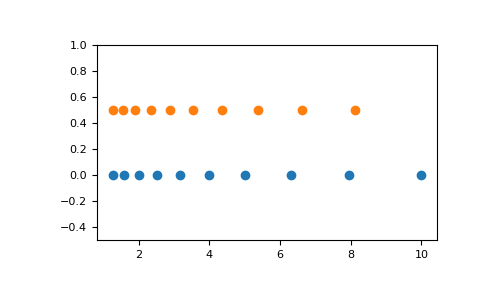

numpy.logspace¶
-
numpy.logspace(start, stop, num=50, endpoint=True, base=10.0, dtype=None, axis=0)[source]¶ Return numbers spaced evenly on a log scale.
In linear space, the sequence starts at
base ** start(base to the power of start) and ends withbase ** stop(see endpoint below).Changed in version 1.16.0: Non-scalar start and stop are now supported.
- Parameters
- startarray_like
base ** startis the starting value of the sequence.- stoparray_like
base ** stopis the final value of the sequence, unless endpoint is False. In that case,num + 1values are spaced over the interval in log-space, of which all but the last (a sequence of length num) are returned.- numinteger, optional
Number of samples to generate. Default is 50.
- endpointboolean, optional
If true, stop is the last sample. Otherwise, it is not included. Default is True.
- basefloat, optional
The base of the log space. The step size between the elements in
ln(samples) / ln(base)(orlog_base(samples)) is uniform. Default is 10.0.- dtypedtype
The type of the output array. If
dtypeis not given, infer the data type from the other input arguments.- axisint, optional
The axis in the result to store the samples. Relevant only if start or stop are array-like. By default (0), the samples will be along a new axis inserted at the beginning. Use -1 to get an axis at the end.
New in version 1.16.0.
- Returns
- samplesndarray
num samples, equally spaced on a log scale.
See also
arangeSimilar to linspace, with the step size specified instead of the number of samples. Note that, when used with a float endpoint, the endpoint may or may not be included.
linspaceSimilar to logspace, but with the samples uniformly distributed in linear space, instead of log space.
geomspaceSimilar to logspace, but with endpoints specified directly.
Notes
Logspace is equivalent to the code
>>> y = np.linspace(start, stop, num=num, endpoint=endpoint) ... # doctest: +SKIP >>> power(base, y).astype(dtype) ... # doctest: +SKIP
Examples
>>> np.logspace(2.0, 3.0, num=4) array([ 100. , 215.443469 , 464.15888336, 1000. ]) >>> np.logspace(2.0, 3.0, num=4, endpoint=False) array([ 100. , 177.827941 , 316.22776602, 562.34132519]) >>> np.logspace(2.0, 3.0, num=4, base=2.0) array([ 4. , 5.0396842 , 6.34960421, 8. ])
Graphical illustration:
>>> import matplotlib.pyplot as plt >>> N = 10 >>> x1 = np.logspace(0.1, 1, N, endpoint=True) >>> x2 = np.logspace(0.1, 1, N, endpoint=False) >>> y = np.zeros(N) >>> plt.plot(x1, y, 'o') [<matplotlib.lines.Line2D object at 0x...>] >>> plt.plot(x2, y + 0.5, 'o') [<matplotlib.lines.Line2D object at 0x...>] >>> plt.ylim([-0.5, 1]) (-0.5, 1) >>> plt.show()
